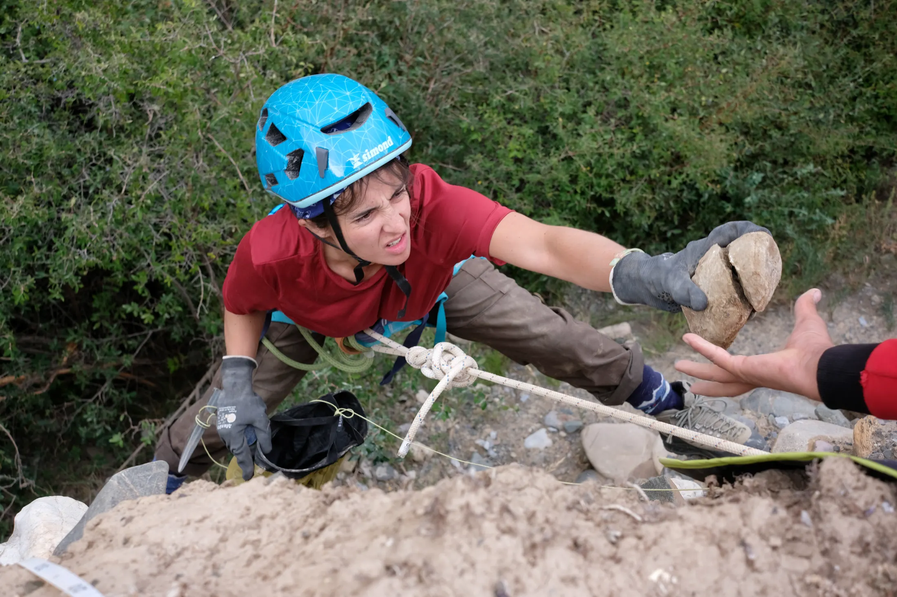

Photography is a fundamental tool in archaeological fieldwork and research communication. It captures the nuances of excavation processes, field environments, and human interactions that define scientific missions. Beyond documentation, photographs also serve as powerful visual records that support site interpretation, enhance reporting, and engage broader audiences.
These photographs aim to document excavation contexts, fieldwork practices, and human interactions in situ. Beyond their documentary value, they seek to convey the atmosphere of the field and highlight the scientific and human dimensions of archaeological research.